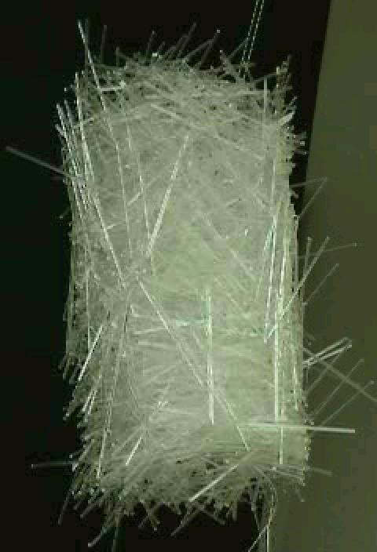

This experiment studied the jamming behavior of elongated (prolate) rod-shaped particles. Specifically, we measured the phase behavior of the force required to pull a small object through a pile of rods, and how the packing fraction depends on the aspect ratio of the rods.
For large aspect-ratio acrylic rods (3" long, 1/16" diameter — aspect ratio > 35), particle entanglement provides sufficient mechanical constraint that the pile remains structurally rigid even without confining walls. This demonstrates a jamming transition driven by shape rather than density alone.
To demonstrate this dramatically, rods were poured into a large cylinder and then the cylinder was removed — the pile remained suspended, hanging from a single screw at the bottom for over a month.

A pile of acrylic rods suspended from the ceiling by a single screw, demonstrating jamming by particle entanglement at high aspect ratio.